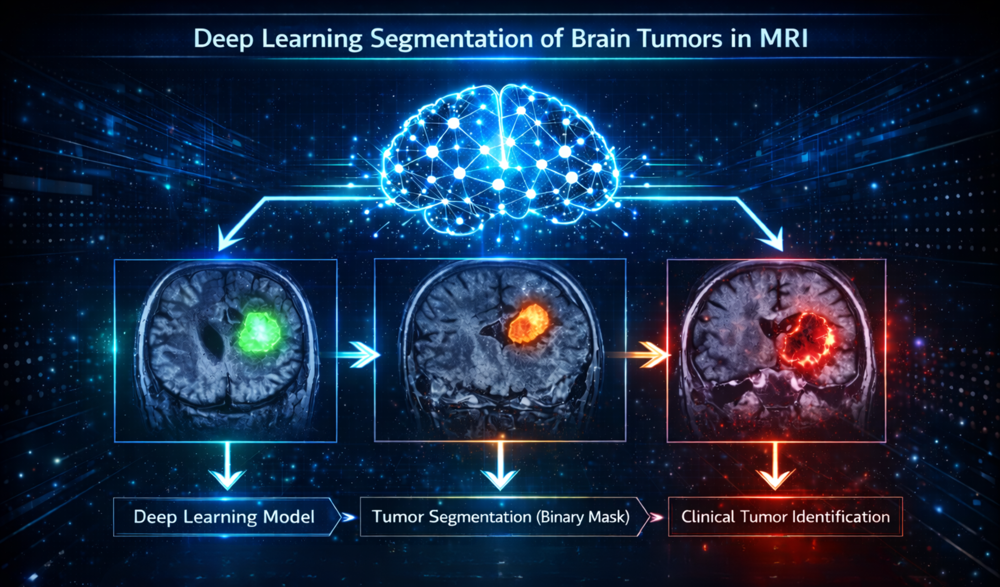

1. Introducción#
{kind=link}

Fig. 1 Representación conceptual del proceso de segmentación de tumores cerebrales mediante Deep Learning.#
1.1 Contexto Clínico#
Los tumores cerebrales primarios representan una de las condiciones oncológicas más graves y de mayor impacto en la calidad de vida a nivel mundial. Según el Central Brain Tumor Registry of the United States (CBTRUS), los tumores cerebrales primarios malignos constituyen una de las formas más letales de cáncer: el glioblastoma, variante maligna del glioma, representa el 52.2% de todos los tumores malignos del cerebro y presenta una tasa de supervivencia a cinco años inferior al 10% [O+23]. El meningioma es el tipo no maligno más frecuente (42.6% del total), mientras que el tumor pituitario, aunque generalmente benigno, puede comprometer funciones endocrinas vitales y presentar dificultades diagnósticas por su localización anatómica profunda [O+23].
A escala global, el análisis de la carga de enfermedad entre 1990 y 2021 indica que los tumores del sistema nervioso central presentan variaciones significativas en incidencia, mortalidad y años de vida ajustados por discapacidad (DALYs) entre regiones, constituyendo un desafío de salud pública de primera magnitud. La revisión sistemática de Musthafa, Memon y Masud [MMM25], que cubre más de dos décadas de investigación (2001–2025), señala que se diagnostican aproximadamente 24.810 nuevos casos anuales de tumor cerebral en los Estados Unidos, con tasas de mortalidad cercanas a 18.990 adultos por año, y proyecta un crecimiento del mercado de diagnóstico asistido por IA desde USD 1.55 mil millones en 2023 hasta USD 5.21 mil millones en 2031.
La resonancia magnética (MRI), especialmente la secuencia T1 con contraste, es el estándar de oro para la detección, caracterización y monitoreo de tumores cerebrales. Su capacidad para ofrecer alta resolución de tejidos blandos sin radiación ionizante la hace irreemplazable en la práctica clínica. Sin embargo, la interpretación manual de estas imágenes es un proceso lento, costoso y susceptible de variabilidad interobservador, lo que motiva el desarrollo de sistemas automatizados de análisis [MMM25].
1.2 El Rol de la Inteligencia Artificial en Imagen Médica#
El aprendizaje profundo (deep learning) ha transformado el análisis automatizado de imágenes médicas en la última década. En el campo específico de la segmentación de tumores cerebrales, la introducción de U-Net [RFB15] en 2015 marcó un punto de inflexión: su arquitectura encoder-decoder con conexiones de salto (skip connections) demostró que redes entrenadas con conjuntos de datos moderados podían alcanzar resultados comparables a los de expertos humanos en delineación de estructuras anatómicas. Desde entonces, una extensa familia de variantes y extensiones ha sido propuesta, incluyendo arquitecturas puramente basadas en Transformer como Swin-Unet [CWC+22], que modelan dependencias de largo alcance en la imagen mediante mecanismos de auto-atención global.
La revisión de Musthafa et al. [MMM25] reporta que los modelos de aprendizaje profundo más avanzados superan el 93% de exactitud en tareas de clasificación de tumores cerebrales, y que la asistencia por IA mejora el diagnóstico radiológico en un 12% en promedio. Sin embargo, los mismos autores identifican como desafíos persistentes el desbalance de clases en los datasets disponibles, la heterogeneidad de datos entre instituciones y la falta de validación clínica externa. Esto posiciona al aprendizaje profundo no como un reemplazo del especialista, sino como una herramienta de soporte a la decisión clínica cuya robustez depende críticamente de la calidad y diversidad de los datos de entrenamiento.
1.3 Limitaciones del Estado del Arte Actual#
A pesar de los avances significativos, la segmentación automática de tumores cerebrales presenta desafíos no resueltos que limitan la adopción clínica de los sistemas existentes.
El primero y más documentado es la escasez de datasets de alta calidad y diversidad suficiente. El dataset BraTS [M+14], referencia histórica del campo, se restringe principalmente a gliomas y emplea datos preprocesados que no reflejan la variabilidad real de la práctica clínica con diferentes equipos y protocolos de adquisición. El dataset de Cheng [Che17], uno de los pocos recursos públicos con múltiples tipos tumorales, carece de máscaras de segmentación a nivel de píxel y presenta desbalance de clases, lo que restringe su aplicabilidad directa para tareas de segmentación semántica.
El segundo desafío es la heterogeneidad morfológica de los tumores. La forma, tamaño, localización y apariencia en imagen varían enormemente entre pacientes, tipos tumorales y planos de adquisición. Esta variabilidad dificulta que los modelos generalicen adecuadamente a casos no vistos, especialmente cuando los datos de entrenamiento no representan suficientemente la diversidad clínica real [MMM25].
El tercer desafío es la predominancia de enfoques 3D multimodal en los modelos de mayor rendimiento. Trabajos recientes como HyBiUnet-TransMask [GJR26] y SDV-TUNet [ZSQ+24] logran resultados de estado del arte operando sobre volúmenes 3D con múltiples secuencias MRI (T1, T2, FLAIR), un escenario que requiere equipamiento especializado y no siempre es accesible en contextos clínicos con recursos limitados. El desarrollo de modelos de alto rendimiento para MRI 2D en modalidad única sigue siendo una línea de investigación con impacto práctico directo.
1.4 Motivación del Trabajo y Justificación del Uso de BRISC 2025#
La publicación de BRISC 2025 [FRM+26b] en enero de 2026 en Scientific Data (Nature Portfolio) representa una oportunidad concreta para atender las limitaciones descritas. BRISC 2025 es un dataset diseñado explícitamente para superar los problemas de los recursos anteriores: incluye 4793 imágenes MRI T1 con contraste de cuatro clases tumorales (glioma, meningioma, pituitario y sin tumor), máscaras de segmentación binaria validadas por radiólogos certificados con un coeficiente Dice de calidad de 0.924, y representación balanceada en tres planos anatómicos (axial, coronal y sagital).
Al momento de esta investigación, BRISC 2025 constituye uno de los datasets más completos, recientes y de mayor calidad disponibles públicamente para la tarea de segmentación de tumores cerebrales en MRI 2D. Su carácter multiclase y multiplanar lo distingue de BraTS, que se centra en gliomas 3D multimodal, haciéndolo especialmente relevante para contextos clínicos con recursos limitados donde la adquisición de múltiples secuencias MRI no siempre es posible. Adicionalmente, al ser un dataset publicado en 2026, los benchmarks establecidos en su paper original [FRM+26b] son recientes y abren una ventana directa para contribuciones investigativas que los amplíen o superen.
1.5 Contribuciones Principales del Proyecto#
Este trabajo realiza las siguientes contribuciones al estado del arte:
Análisis exploratorio profundo de BRISC 2025: caracterización estadística y visual del dataset incluyendo distribución de clases, planos anatómicos, estadísticas de máscaras y patrones relevantes para el modelado.
Evaluación comparativa de modelos baseline: implementación y evaluación de U-Net, Attention U-Net, UNet++ y DeepLabV3+ sobre BRISC 2025, con comparación directa frente a los benchmarks publicados en [FRM+26b] y análisis de errores desagregado por tipo de tumor y plano anatómico.
Análisis sistemático de errores: estudio cualitativo y cuantitativo de los patrones de fallo de los modelos baseline que informa el diseño de la propuesta propia.
Arquitectura original: propuesta de un modelo de segmentación con al menos un componente novedoso, motivado por los hallazgos del análisis de errores, con evaluación empírica que demuestra mejoras sobre los benchmarks actuales de BRISC 2025 (mIoU ponderado de referencia: 80.6% reportado en [FRM+26b]).